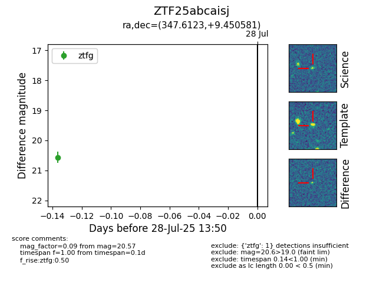

Target ZTF25abcaisj at 2025-07-28 13:50, see:
FINK: fink-portal.org/ZTF25abcaisj
Lasair: lasair-ztf.lsst.ac.uk/objects/ZTF25abcaisj
ALeRCE: alerce.online/object/ZTF25abcaisj
alt names
ZTF25abcaisj (ztf,fink)
coordinates:
equatorial (ra, dec) = (347.6123,+9.45058)
galactic (l, b) = (85.6653,-45.98651)
photometry
last ztfg=20.57
1 ztfg detections
